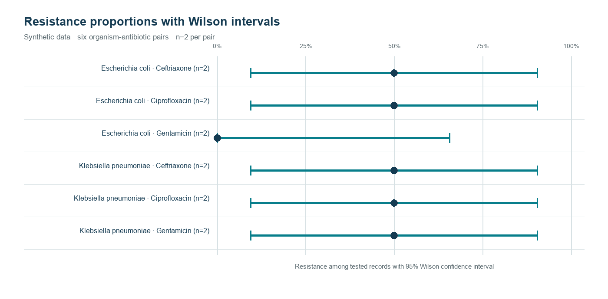

Analyse statistique biomédicale
Présenter une proportion observée avec son incertitude et rendre visibles les contrôles de qualité.
Données synthétiques · estimation descriptive1. Pourquoi quantifier l’incertitude ?
Une proportion calculée sur un échantillon est une estimation. Elle varie lorsque l’on change les observations et elle devient particulièrement instable avec de petits effectifs. Afficher uniquement un pourcentage peut donner une impression de précision injustifiée. Un intervalle de confiance apporte une information complémentaire sur la compatibilité entre l’échantillon observé et différentes valeurs possibles de la proportion.
2. Question et objectifs
Question : comment restituer des proportions de résistance sans masquer l’incertitude liée aux effectifs ?
- auditer les valeurs manquantes et les doublons ;
- calculer les proportions observées par groupe ;
- estimer les intervalles de Wilson à 95 % ;
- représenter les estimations avec leurs bornes ;
- expliquer pourquoi un intervalle large appelle davantage de données.
3. Revue de lecture
Pour une proportion binomiale, l’approximation normale peut devenir peu fiable lorsque l’effectif est faible ou que la proportion est proche de 0 ou 1. L’intervalle de Wilson est une alternative couramment utilisée car il respecte mieux les bornes 0–1 et conserve une couverture plus stable dans ces situations. Il ne corrige toutefois pas un biais de sélection et ne transforme pas un échantillon de convenance en échantillon représentatif.
Un intervalle de confiance ne signifie pas que 95 % des observations futures se trouveront dans l’intervalle. Il décrit une procédure d’estimation répétée. La communication doit donc associer la proportion, les effectifs, la méthode et le contexte de collecte.
4. Plan d’analyse et justification statistique
Le seuil de 5 % est fixé avant l’analyse comme convention de décision pour le risque de première espèce. Il ne transforme pas un résultat en vérité et ne mesure ni l’importance clinique ni la qualité des données. La proportion, son intervalle et l’effectif restent indispensables à l’interprétation.
Le contrôle amont vérifie l’unité d’analyse, les valeurs manquantes, les catégories admises et les doublons. Un doublon ne doit pas être supprimé mécaniquement : il faut déterminer s’il représente une répétition technique, un même patient ou une observation distincte. Les exclusions sont journalisées pour que le dénominateur final soit explicable.
L’intervalle de Wilson à 95 % est choisi pour éviter l’approximation normale fragile lorsque les effectifs sont faibles ou que la proportion est proche de 0 ou 1. La formule est appliquée à la proportion binomiale observée ; elle ne corrige ni un biais de sélection ni une mauvaise définition de la population.
5. Méthode
Audit préalable
Les valeurs manquantes, les catégories inattendues et les doublons sont recherchés avant les calculs.
Estimation
La proportion est calculée comme le nombre de résultats résistants divisé par l’effectif analysable.
Intervalle
Les bornes de Wilson sont calculées au niveau de confiance de 95 %, puis conservées dans le tableau de sortie.
Graphique
Chaque point est affiché avec ses bornes afin de visualiser à la fois l’estimation et sa précision.
6. Comparaison des groupes et résultats
La comparaison commence par les distributions : effectifs, médianes ou proportions, dispersion et valeurs extrêmes. Le choix de la statistique dépend de la variable et de son échelle ; une moyenne seule ne décrit pas correctement une distribution asymétrique. Lorsque le modèle le permet, une taille d’effet complète l’intervalle de confiance afin de distinguer la grandeur d’un écart de sa seule significativité.
Le tableau public rassemble les estimations et les bornes de Wilson. Le graphique rend immédiatement visibles les différences entre proportions, mais surtout l’ampleur des intervalles. Avec de petits effectifs, deux groupes peuvent présenter des pourcentages différents tout en ayant des intervalles qui se recouvrent largement.
Estimations et intervalles · Audit de qualité

7. Interprétation et limites
Un intervalle large signale une information peu précise, généralement liée à un petit nombre d’observations. Il ne faut pas le lire comme une preuve d’absence ou de présence d’un effet. L’analyse ne comporte ni ajustement sur les facteurs cliniques, ni comparaison causale, ni validation sur une cohorte indépendante. Les données sont synthétiques.
8. Conclusion
La valeur d’une analyse biomédicale réside autant dans la quantification de l’incertitude que dans le pourcentage central. Cette démarche permet de communiquer des résultats plus honnêtement et de justifier la nécessité d’un échantillon plus large lorsque la précision est insuffisante.
9. Références de lecture
- Brown LD, Cai TT, DasGupta A. Interval estimation for a binomial proportion. Statistical Science. 2001.
- Agresti A, Coull BA. Approximate is better than “exact” for interval estimation of binomial proportions. The American Statistician. 1998.
- Newcombe RG. Two-sided confidence intervals for the single proportion. Statistics in Medicine. 1998.
Données synthétiques publiées pour démontrer une méthode de restitution statistique.